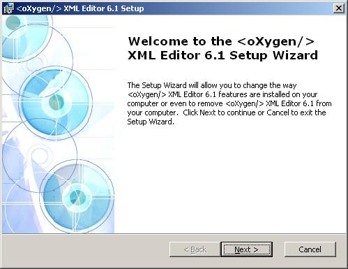
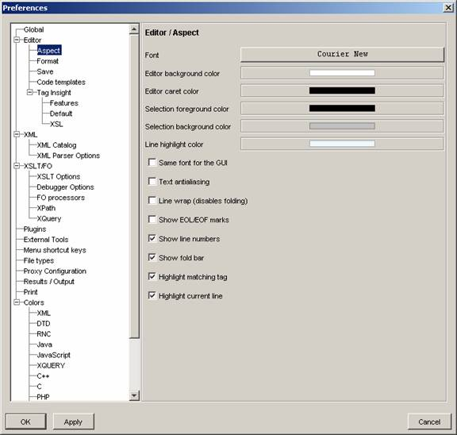
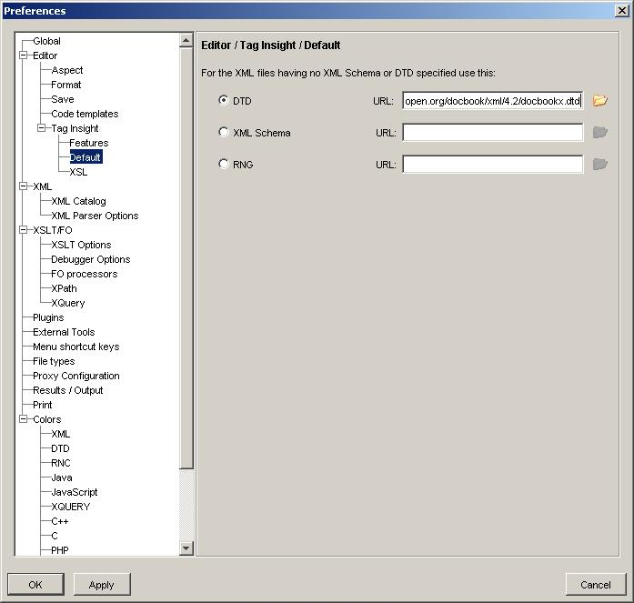
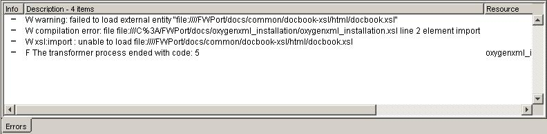
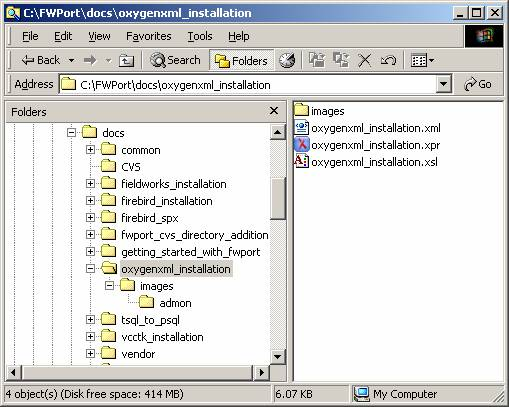
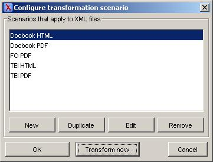
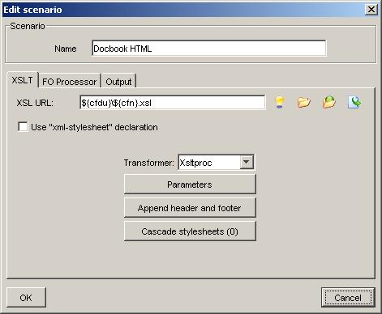
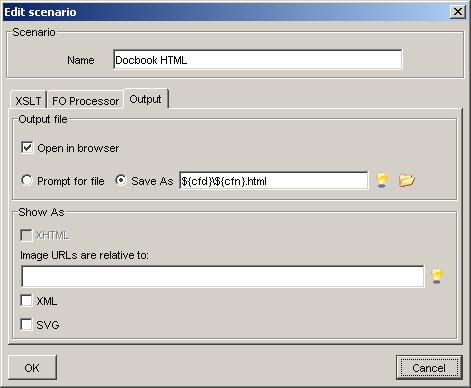

Table of Contents
Abstract
This document describes how to install syncRO Soft OxygenXML and shows how to build a sample project.
Run the setup and choose the default options.
Start Oxygen XML and under the Help menu choose Register and paste in the license text that you received by email.
Under the Options menu select Preferences.
Under the Editor, Aspect preference you can set the Font preference to Courier New or any personal preference. This is not required to be changed. It is documented only to help locate what is most likely a commonly desired modification.
Only for version 5.1 under the Editor, Tag Insight, Default preference you can set the default DTD to http://www.oasis-open.org/docbook/xml/4.2/docbookx.dtd (for Docbook auto-completion) if you want to have auto-completion for entity documents which don't have a DTD specified in the header when they are included as part of another XML document. This is especially useful with Docbook nested entity documents.
For version 6.0+ this is no longer required as defaults are preset based on document type.
![[Note]](images/admon/note.gif) | Note |
|---|---|
For the sake of simplicity the projet name used for this sample will be oxygenxml_installation. |
Under the \FWPort\docs create an oxygenxml_installation subdirectory.
Note It is recommended that all files and subdirectories use all lowercase letters and that the files follow the same name as the folder name. Using OxygenXML go under the "File" menu and select the "New Project item" and save it as oxygenxml_installation.xpr under \FWPort\docs\oxygenxml_installation directory. You can also click on the following icon:
Copy from another project directory into this directory the main XML document or create a new one.
Copy the \FWPort\docs\common\templates\project.xsl XSL stylesheet into this directory and rename it to be the same as the main document. In this case the main document is called oxygenxml_installation.xml and therefore the stylesheet will be called oxygenxml_installation.xsl.
The template XSL stylesheet has a directive in it that is OxygenXML version dependent.
Note In version 6.0+ this has to be used and there are no more workarounds required:
<xsl:import href="../common/docbook-xsl/html/docbook.xsl"/>
Note But for version 5.1 this had to be used:
<xsl:import href="file:////FWPort/docs/common/docbook-xsl/html/docbook.xsl"/>
The path was specified as above without the drive specifier in the hope that it would make it generic between Unix and Windows platforms but it was found on occasions that it would give an error when processed during reformatting or XSL transformation.
The following was always successful but is non portable:
<xsl:import href="file:///C:/FWPort/docs/common/docbook-xsl/html/docbook.xsl"/>
If the following error occurs when the drive specifier is omitted you can clear the problem by closing OxygenXML and opening it by double-clicking in Windows Explorer on the respective *.xpr OxygenXML project file and it should work again.
W warning: failed to load external entity "file:////FWPort/docs/common/docbook-xsl/html/docbook.xsl"
It appears that if OxygenXML is installed on a different drive than where you're project file is located it will not resolve the paths as being the same as the project file path. This can be resolved also by changing the "Start in" value of the OxygenXML windows shortcut to the save drive specifier as where you're documents are located i.e. if your project is on drive C then specify "C:\" for the "Start in" value.

Create an images subdirectory.
If you're going to use the following graphics copy their respective directories from \FWPort\docs\images to your project's images directory:
Admonitions (Caution, Important, Note, Tip, Warning) directory is admon.
Callouts (Program listing references) directory is callout.
Navigation (Home, Next, Pref, Up) directory is navig.
For this project we only need the admonitions icons.
You should now have the following directory and file structure in place:
Configure the transformation for XML documents.
Under the "Document" menu, "XML Document" submenu select the "Configure Transformation Scenario" item (or CTRL-SHIFT-C). You can also click on the following icon:
Click on the "Edit" button of the following window:
Under the "XSLT" tab ensure that the following settings are set:
XSL URL: ${cfdu}\${cfn}.xsl was ${frameworks}/docbook/xsl/html/docbook.xsl
This ensures that the XSL document used for the transformation is based on the XML document name being transformed.
Transformer: Xsltproc
The following window is a snapshot of what the "XSLT" tab should look like:

Under the "Output" tab ensure that the following settings are set:
Save As: ${cfd}\${cfn}.html
This ensures that the HTML document is based on the XML document name being transformed.
The following window is a snapshot of what the "Output" tab should look like:

Once all done then click on all of the "Ok" buttons until the popup windows are dismissed
Note OxygenXML remembers the above settings based on the document type (i.e. .xsl, .xml) from one project to the next therefore this will only need to be set once.
Before you produce the html document from the main XML docbook document reformat under the "Document" menu, "XML Document" submenu select the "Format and indent" item (or CTRL-SHIFT-P). This makes difference comparison and CVS handling friendlier. You can also click on the following icon:
To produce the html document from the main XML docbook document under the "Document" menu, "XML Document" submenu select the "Apply Transformation Scenario" item (or CTRL-SHIFT-T). You can also click on the following icon:
If the "Configure transformation scenario" window popups then highlight the "Docbook HTML" and click on the "Transform now" button. From this time on OxygenXML will remember your preferred transformation.